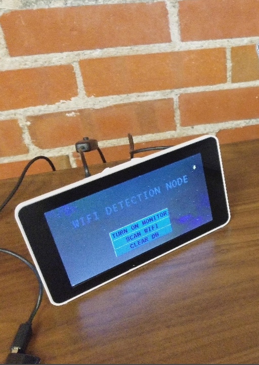

Wifi Analyzer Members

The Wifi Analyzer is a device made by Cole Stasney and Sadathe Toure for a week long Q3 project during the Galvanize Web Development Immersive program in 2017. This device allows you to inspect, analyze and return in depth information about your home or corporate Wi-Fi network to determine the power, privacy setting, authentication and channel of you network.
The equipment required for this project was a Raspberry Pi, a touch screen and a network card capable of entering monitor mode. The application is decoupled and consists of several different and somewhat complex parts. To gain the Wi-Fi information, a Node.js server was installed on a Raspberry Pi with Express. The “Wi-Fi Detection Node,” or Pi, is placed in any given location and instructed to start a scan on a button press. The scan is conducted with the aircrack-ng suite of tools coupled with a capable Wi-Fi card. When the scan is complete, the acquired data is sorted and sent to an API that utilizes an SQL database. A separate front end utilizing JavaScript, D3 and DC charts is then able to access the API and display the data in a visually intuitive way.
The front end and API of this tool are available and free for use in your own project or as a raw example of how to utilize and display the Wi-Fi data once you acquire it. The Node.js server code on the Pi is not publicly available as the tools used to conduct the scan must be used very carefully as to avoid violating any local and/or federal laws. If you are interested in how we made the Wi-Fi Detection Node on the Pi, spend time reading on the aircrack-ng suite of tools and more specifically the use of airmon-ng to scan networks. It is also recommended you research the proper way to use these tools as to avoid any legal problems.
For more information about this project, please check out the README on our repo.
https://github.com/Wifi-Analyzer
Contributors:
